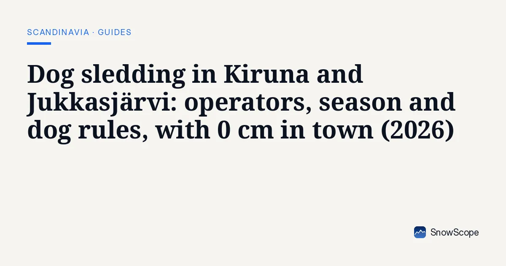

Dog sledding in Kiruna and Jukkasjärvi: operators, season and dog rules, with 0 cm in town (2026)
Early November brought almost no snow to Kiruna and the low valleys around it. On 13 November the weather station in town recorded 0 cm, as did Jukkasjärvi to the east and Esrange further south. Up toward the Norwegian border at Katterjåkk, 9 cm lay on the ground. For anyone planning a husky tour this month, the message is clear: ring ahead to ask if the operator is running, because most need a snow base on their trails.
See the live snow forecast for Scandinavia in the SnowScope appSnow depth, powder alerts and the 3D map, free.

When dog-sledding season starts here
Several operators near Kiruna aim to open their season around mid-November, but snow depth matters more than the calendar. Active Lapland offers a morning ride of about 13 km for 1800 SEK per person, with longer trips where you steer your own team. Kiruna Husky, based at Kalixforsbron, says its tours run from December to March, with the season window open from mid-November to mid-April. Kiruna Sleddog Tours runs a daily tour of about 2.5 hours. Arctic Dogsled Adventures offers a full-day tour of about 4.5 hours including transport, where you drive a team of three or four dogs.
Since trails remain mostly bare right now, early bookings often mean wheeled carts instead of sleds, or shorter loops that use patches of snow. As November goes on and cold settles in, snow will likely build on higher ground and in the forest. Contact your chosen operator to find out what happens if snow has not yet arrived on your chosen date.
Very short daylight shapes the tour schedule
Kiruna sits far north, and November light disappears fast. On 15 November the day lasts about 5 hours; by 30 November it is down to under 3 hours. From 11 December onward the sun does not rise above the horizon at all until mid-January. Tour operators time morning rides around the brightest part of the day for safety and enjoyment.
If you plan to explore on foot or take your own dog out for a walk, pack a headlamp and wear a reflective jacket. The cold in the river valleys here can be sharp even when air temperature is not extreme, so bring warm, waterproof boots.
Rules for dogs in Kiruna and reindeer land
Sweden's national law says dogs may not run loose where wild animals live from 1 March to 20 August. Outside those months the rule does not apply, but winter brings other rules. The whole Kiruna area is reindeer land, which means dogs must be leashed near herds and in all reindeer pastures. National parks and nature reserves require a leash at all times.
Two parks close to Kiruna have restricted access. In Abisko and Vadvetjåkka national parks, dogs are allowed only from 1 January to 30 April, and always on a leash. In Abisko, a leashed dog may walk the roads and marked trails year-round and use the area around the visitor centre. Inside Kiruna town itself, local rules require a leash in all built-up areas and on signed paths. The municipality's groomed ski tracks are off-limits to dogs in winter unless a sign permits them. A fenced dog park stands on Kyrkogatan for off-leash play.
What to bring and what to expect
Early-season snow here tends to be thin and patchy. Rocks, grass and trail dirt may show through. Guides are used to this and adapt the route, but expect shorter distances and more stops than a mid-winter tour would offer. Many operators carry spare blankets or coats to keep dogs warm during stops.
The river valleys around Jukkasjärvi stay colder than the air temperature suggests, especially in the early morning. Even if the forecast looks mild, bring an extra layer and windproof gloves. A hot drink in a thermos is a good idea.
Tips for skiers
- Contact your operator at least a week in advance to confirm snow conditions on your planned date. In early November, wheeled carts or shorter routes may replace full sled tours.
- Bring a headlamp, reflective gear and warm waterproof boots. November daylight is short and the river-valley cold is real.
- If you are walking your own dog, stay off groomed ski tracks and keep a leash on wherever reindeer might be—they are common in winter around Kiruna.
- Check the operator's cold-weather policy. Some do not run when temperatures fall below -20 °C.
- For safety on reindeer land, ask locals about recent herd locations before you set out.
About these numbers
Resort snow depths are the deepest snow on the resort's upper slopes on the date shown; they are estimates for an area, not a measurement at one point. Forecasts can change. Always read the official avalanche bulletin before going off-piste.
Cite this report
For research, teaching or the press: the numbers and charts are free to reuse under CC BY 4.0 with this citation.
SnowScope (2026), Dog sledding in Kiruna and Jukkasjärvi: operators, season and dog rules, with 0 cm in town (2026), https://snowscope.app/blog/en/2026/11/kiruna-dog-sledding-jukkasjarvi-winter-guide-2026.html, accessed 2026-11-14
SnowScope (Atlas Labs). (2026, November 14). Dog sledding in Kiruna and Jukkasjärvi: operators, season and dog rules, with 0 cm in town (2026). SnowScope snow reports. https://snowscope.app/blog/en/2026/11/kiruna-dog-sledding-jukkasjarvi-winter-guide-2026.html
BibTeX
@misc{snowscope2026kirunadogsleddingjukkasj,
author = {{SnowScope (Atlas Labs)}},
title = {Dog sledding in Kiruna and Jukkasjärvi: operators, season and dog rules, with 0 cm in town (2026)},
year = {2026},
month = nov,
howpublished = {\url{https://snowscope.app/blog/en/2026/11/kiruna-dog-sledding-jukkasjarvi-winter-guide-2026.html}},
note = {Published 2026-11-14 17:39 UTC; accessed 2026-11-14}
}· CC BY 4.0 · Methods, data and tools →
Follow Scandinavia
Free: a message when fresh snow is coming, and the forecast every morning.
More snow reports

Beitostølen has 12 cm measured at the weather station on 13 November. The whole ski area sits at the same altitude band, so snow depth barely changes from base to summit.

Book 15-21 December at Åre for the best snow odds before Christmas crowds. 89% of winters had 30 cm at mid-mountain that week. Data from 13 November 2026.

Ylläs snow conditions in mid-November 2026: the weather stations around Ylläs measured 0 to 2 cm on 13 November, far below normal; about 23 cm of snow is forecast this week with no rain, and the slopes aim to open on 21 November.